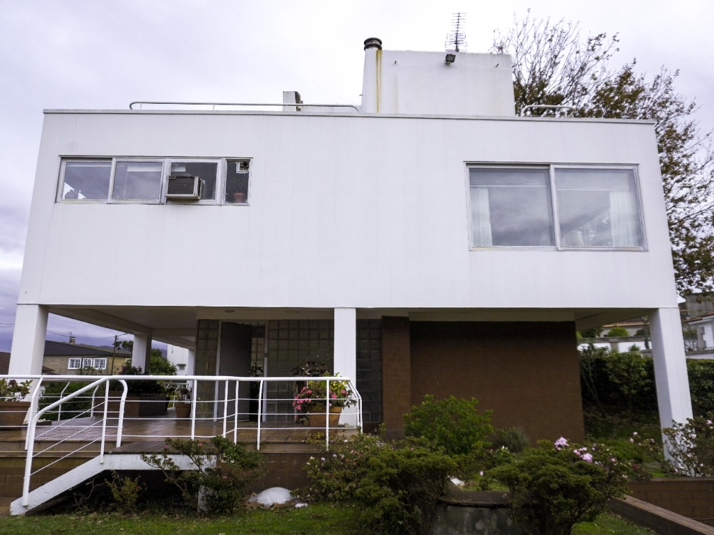
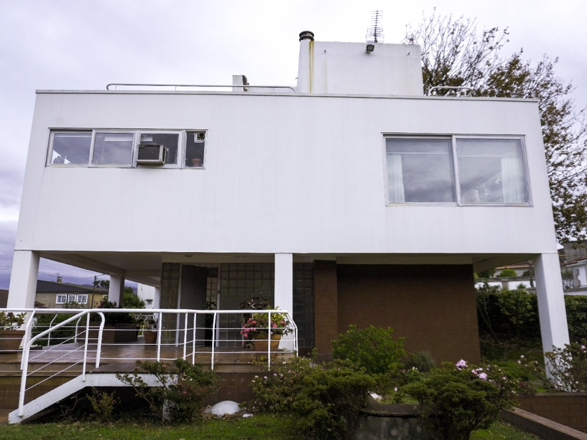
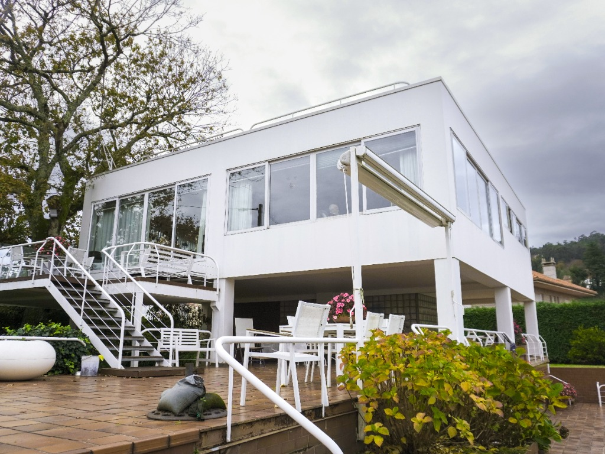
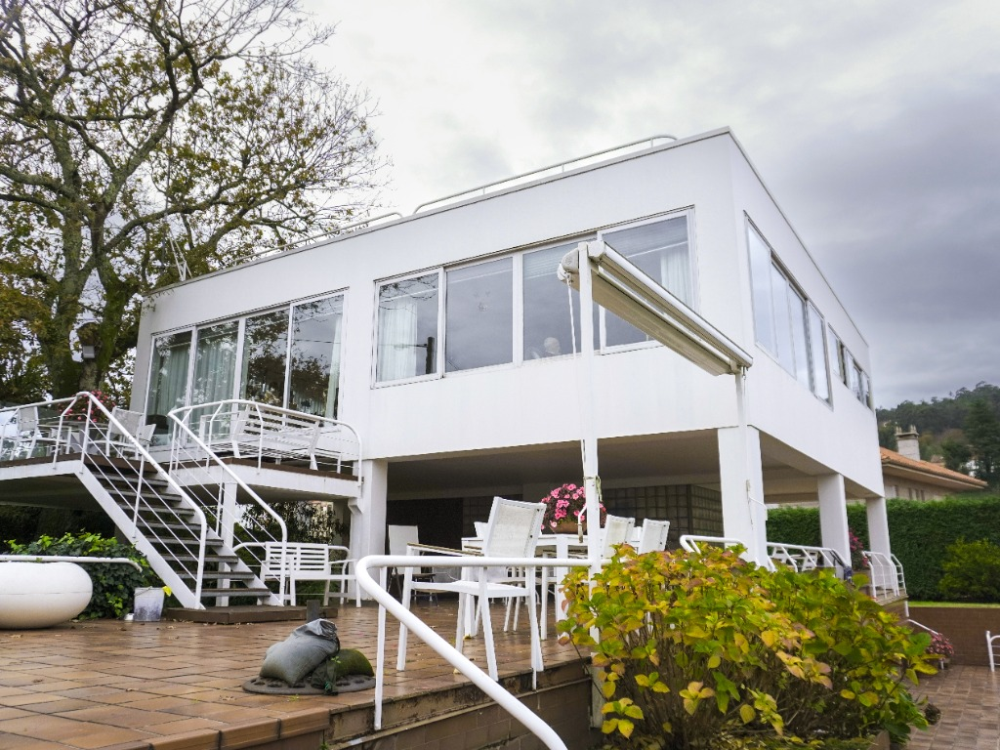
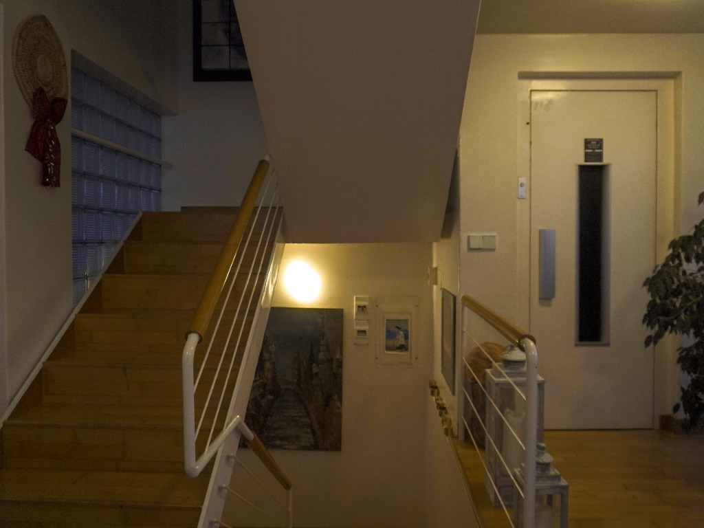
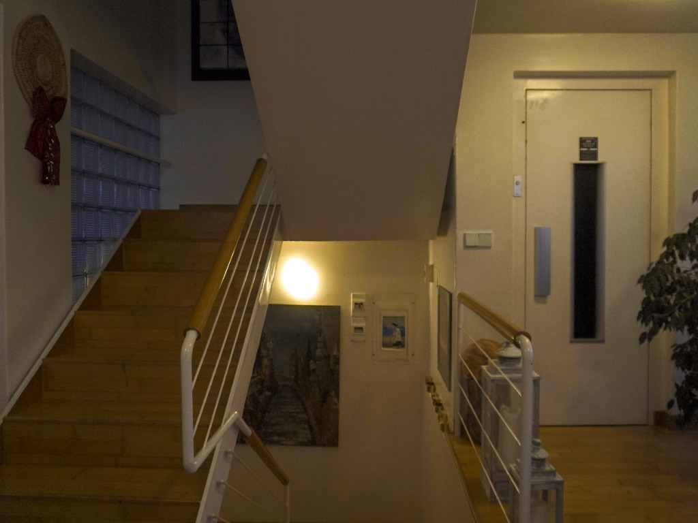

Lo que dio lugar a este proyecto fue la vida de la familia y sus necesidades. Don Alejandro se implicó encontrando y resolviendo el problema para conseguir la mejor relación posible entre el lugar y las personas que lo habitan.
Un Proyecto Personal
Durante todo el proceso de diseño estuvo presente la opinión y gustos de los propietarios, respondiendo de la forma más inteligente según los medios disponibles.
Filosofía de Diseño
De la Sota buscó crear una arquitectura que no se impusiera al entorno, sino que dialogara con él, estableciendo una relación única entre la familia, la casa y el paisaje gallego.
_page-0001.jpg) 



 

 
